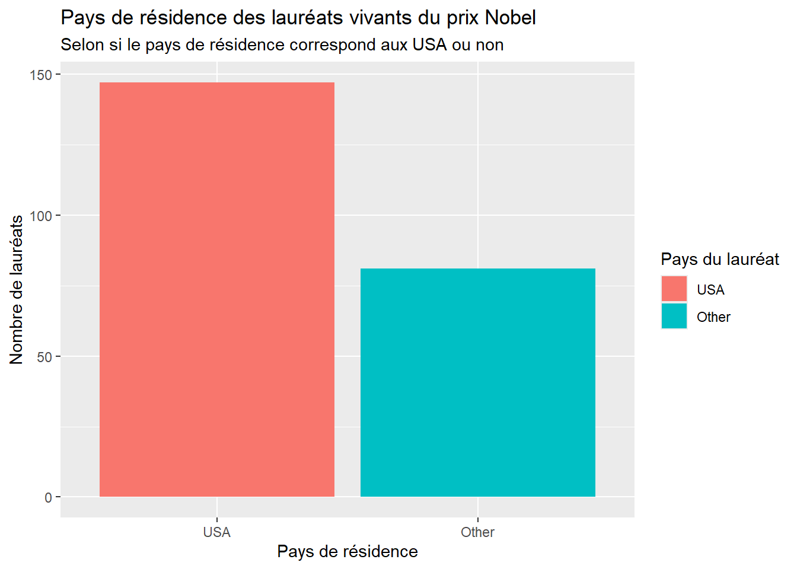
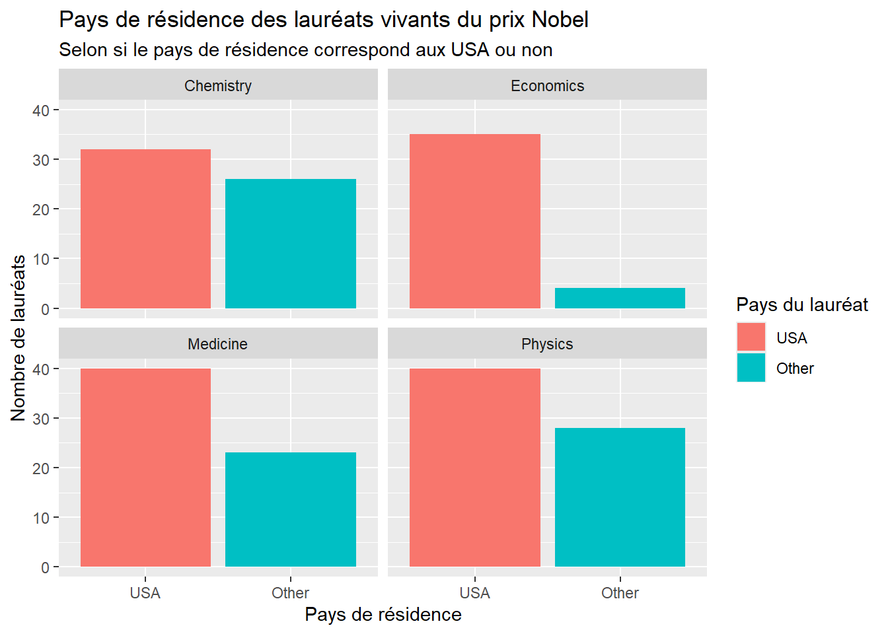
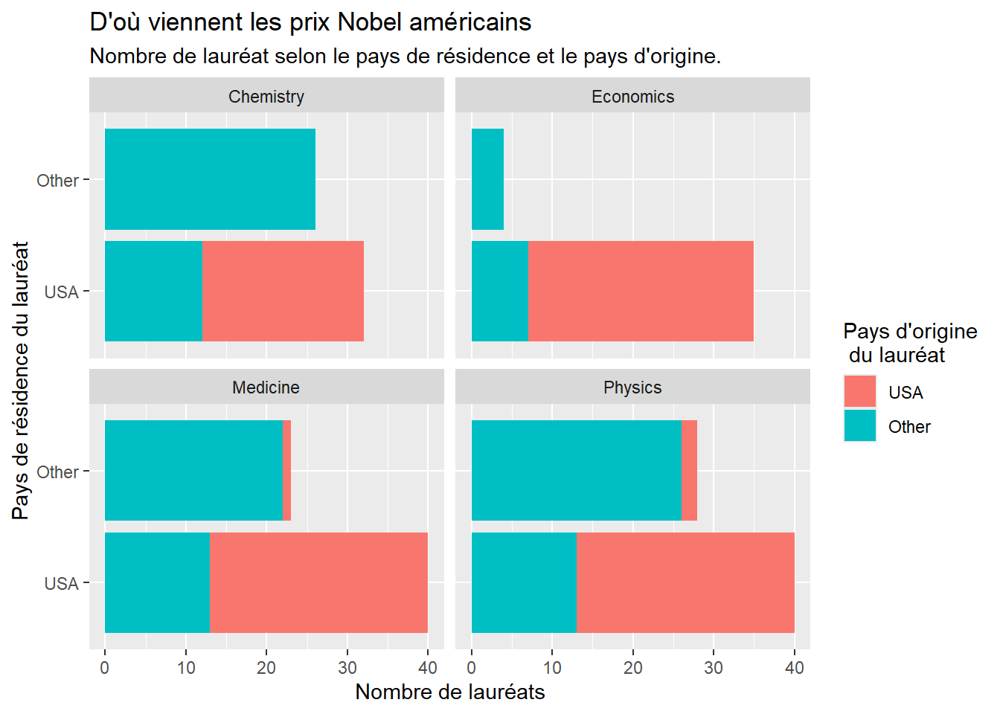
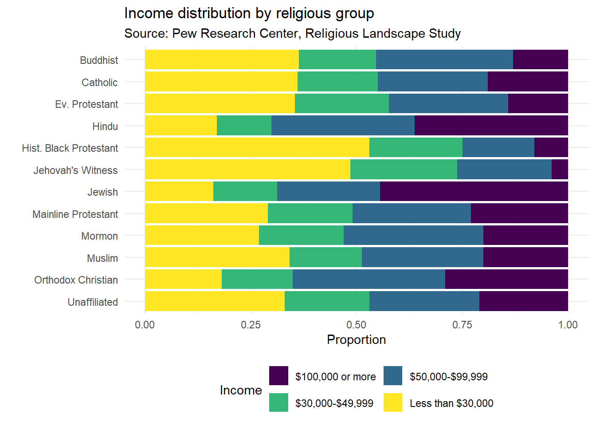

library(tidyverse)Semaine 1 - Data wrangling
En janvier 2017, Buzzfeed a publié un article sur pourquoi les lauréats du prix Nobel montrent que l’immigration est si importante pour la science américaine.
Vous pouvez lire l’article ici. Dans l’article, ils montrent que bien que la plupart des lauréats vivants du prix Nobel en sciences soient basés aux États-Unis, beaucoup d’entre eux sont nés dans d’autres pays. C’est une des raisons pour lesquelles le monde scientifique dit que l’immigration est vitale pour le progrès. Dans ce lab, nous travaillerons avec les données de cet article pour recréer certaines de leurs visualisations ainsi qu’explorer de nouvelles questions.
Getting started
Sur le portail de cours, vous trouverez le lien d’invitation pour ce lab. Cela vous donnera accès à un répo, qui devrait être nommé lab-03-nobel-laureates-VOTRE_GITHUB_USERNAME. Une fois que vous avez accepté l’invitation, vous aurez accès à un répo privé sur GitHub avec le matériel pour ce lab. Récupérez le lien du repo et clonez le sur RStudio. Vérifiez qu’il compile sans erreur. Dans le YAML, le output est réglé sur "github_document". Cela permet d’obtenir un format adapté à GitHub. Notamment, votre fichier final sera un fichier Markdown (.md).
Échauffement
Avant d’introduire les données, commençons par quelques exercices simples.
- Mettez à jour le YAML, en changeant le nom de l’auteur par le vôtre, et knit le document.
- Committez vos modifications avec un message de commit. Assurez vous que les fichiers .Rmd et .md sont bien ajoutés au commit.
- Pushez vos modifications sur GitHub.
- Allez dans votre dépôt sur GitHub et confirmez que vos modifications sont visibles dans vos fichiers Rmd et md.
Packages
Nous utiliserons le package tidyverse pour une grande partie de la manipulation des données.
S’il n’est pas déjà installé, vous pouvez le faire avec la commande install.packages("tidyverse"). Cette commande n’est nécaisse qu’une seule fois.
Les lauréats du Prix Nobel
Données
Le jeu de données pour cet exercice se trouve sous forme de fichier CSV (valeurs séparées par des virgules) dans le dossier data de votre dépôt. Vous pouvez les charger avec la fonction read_csv:
Les descriptions des variables sont les suivantes :
id: Numéro d’identificationfirstname: Prénom du lauréatsurname: Nom de familleyear: Année de remise du prixcategory: Catégorie du prixaffiliation: Affiliation du lauréatcity: Ville du lauréat l’année du prixcountry: Pays du lauréat l’année du prixborn_date: Date de naissance du lauréatdied_date: Date de décès du lauréatgender: Sexe du lauréatborn_city: Ville de naissance du lauréatborn_country: Pays de naissance du lauréatborn_country_code: Code du pays de naissance du lauréatdied_city: Ville de décès du lauréatdied_country: Pays de décès du lauréatdied_country_code: Code du pays de décès du lauréatoverall_motivation: Motivation générale pour la reconnaissanceshare: Nombre d’autres lauréats avec lesquels le prix est partagémotivation: Motivation pour la reconnaissance
Dans quelques cas, le nom de la ville/pays a changé après la réception du prix par le lauréat (par exemple, en 1975, la Bosnie-Herzégovine s’appelait la République fédérative socialiste de Yougoslavie). Dans ces cas, les variables ci-dessous reflètent un nom différent de leurs homologues sans le suffixe `_original`.
born_country_originalborn_city_originaldied_country_originaldied_city_originalcity_originalcountry_original
Manipulation de données
Nous allons commencer par jeter un coup d’oeil au tableau que nous avons chargé. Pour cela, nous pouvons utiliser la fonction glimpse()
Rows: 935
Columns: 26
$ id <dbl> 1, 2, 3, 4, 5, 6, 6, 8, 9, 10, 11, 12, 13, 14, 1…
$ firstname <chr> "Wilhelm Conrad", "Hendrik A.", "Pieter", "Henri…
$ surname <chr> "Röntgen", "Lorentz", "Zeeman", "Becquerel", "Cu…
$ year <dbl> 1901, 1902, 1902, 1903, 1903, 1903, 1911, 1904, …
$ category <chr> "Physics", "Physics", "Physics", "Physics", "Phy…
$ affiliation <chr> "Munich University", "Leiden University", "Amste…
$ city <chr> "Munich", "Leiden", "Amsterdam", "Paris", "Paris…
$ country <chr> "Germany", "Netherlands", "Netherlands", "France…
$ born_date <date> 1845-03-27, 1853-07-18, 1865-05-25, 1852-12-15,…
$ died_date <date> 1923-02-10, 1928-02-04, 1943-10-09, 1908-08-25,…
$ gender <chr> "male", "male", "male", "male", "male", "female"…
$ born_city <chr> "Remscheid", "Arnhem", "Zonnemaire", "Paris", "P…
$ born_country <chr> "Germany", "Netherlands", "Netherlands", "France…
$ born_country_code <chr> "DE", "NL", "NL", "FR", "FR", "PL", "PL", "GB", …
$ died_city <chr> "Munich", NA, "Amsterdam", NA, "Paris", "Sallanc…
$ died_country <chr> "Germany", "Netherlands", "Netherlands", "France…
$ died_country_code <chr> "DE", "NL", "NL", "FR", "FR", "FR", "FR", "GB", …
$ overall_motivation <chr> NA, NA, NA, NA, NA, NA, NA, NA, NA, NA, NA, NA, …
$ share <dbl> 1, 2, 2, 2, 4, 4, 1, 1, 1, 1, 1, 1, 2, 2, 1, 1, …
$ motivation <chr> "\"in recognition of the extraordinary services …
$ born_country_original <chr> "Prussia (now Germany)", "the Netherlands", "the…
$ born_city_original <chr> "Lennep (now Remscheid)", "Arnhem", "Zonnemaire"…
$ died_country_original <chr> "Germany", "the Netherlands", "the Netherlands",…
$ died_city_original <chr> "Munich", NA, "Amsterdam", NA, "Paris", "Sallanc…
$ city_original <chr> "Munich", "Leiden", "Amsterdam", "Paris", "Paris…
$ country_original <chr> "Germany", "the Netherlands", "the Netherlands",…Il est ainsi possible de voir pour chaque colonne, le type de données qui a été détecté lors de l’importation, et un coup d’oeils aux premières valeurs. C’est le moment de repérer si un type ne convient pas.
Exploration de données
Combien d’observations et combien de variables y a-t-il dans le jeu de données ? Que représente chaque ligne ?
Sélection de données
Il y a quelques observations dans ce jeu de données que nous exclurons de notre analyse pour correspondre aux résultats de Buzzfeed.
Pour rappel, les différents verbes du tidyverse permettent de manipuler les données:
select: Sélectionner une colonnearrange: Ordonner les lignesslice: Sélectionner des lignes (par les index)filter: Sélectionner des lignes selon des critèresdistinct: Filtrer les lignes uniquesmutate: Ajout de nouvelles variablessummarise: Réduire variables en valeursgroup_by: Regrouper des observations selon une variable
Countez le nombre de valeur NA pour la colonne country. Pour cela, vous pouvez utiliser les fonctions filter, is.na et count.
Quelles sont les valeurs possibles pour la variable gender ? La valeur org signifie qu’une organisation a gagné le prix Nobel.
Nous allons maintenant vouloir sélectionner seulement les entrées qui ont toutes les valeur nécessaire, c’est-à-dire des personnes vivantes dont on connait le pays d’origine.
Créez un nouveau data frame appelé nobel_living qui filtre pour
- les lauréats pour lesquels
countryest disponible - les lauréats qui sont des personnes par opposition aux organisations (les organisations sont désignées par
orgdans la variablegender) - les lauréats vivant, c’est-à-dire les entrées dont la
died_dateestNA
Vérifiez que vous obtenez bien un data frame avec 228 observations après avoir filtré les données.
🧶 ✅ ⬆️ Knit, commit, and push ! N’oubliez pas le message de commit.
Analyse et visualisation de données
“La plupart des lauréats vivants du prix Nobel étaient basés aux États-Unis lorsqu’ils ont remporté leurs prix”
… dit l’article de Buzzfeed. Voyons si c’est vrai.
Tout d’abord, nous allons créer une nouvelle variable pour identifier si le lauréat vivait aux États-Unis lorsqu’il a remporté son prix. Pour cela, nous utiliserons la fonction mutate(). Créez une nouvelle colonne country_us qui sera égale à "USA" si le country est égal à “USA” et à "Other" sinon. Pour cela, pensez à utiliser la fonction if_else dans votre mutate.
Nous voudrons ensuite transformer cette colonne en facteur, ce qui est toujours utile lorsqu’on travaille avec des données catégoriques. Pour cela, vous pouvez utiliser la fonction fct_relvel() en précisant la colonne à mettre en facteur et le nom des niveaux (ici “USA” en premier et “Other” en deuxième).
Pour la suite de l’exercice, nous limiterons notre analyse aux catégories suivantes : Physique, Médecine, Chimie et Économie.
Créez un nouveau data frame appelé nobel_living_science qui filtre pour les catégories suivantes : Physique, Médecine, Chimie et Économie.
Pour cela, vous pouvez tester si category est dans le vecteur c("Physics", "Medicine", "Chemistry", "Economics"). Profitez-en également pour transformer cette colonne en facteurs également, en les ordonant par ordre alphabétique.
Pour le prochain exercice, travaillez avec le data frame nobel_living_science que nous avons créé ci-dessus.
Créez un graphique à barres avec des facets visualisant la relation entre la catégorie du prix Nobel et si le lauréat était aux États-Unis lorsqu’il l’a remporté.
Pour rappel, les graphiques peuvent être créés de la forme:
nobel_living_science %>%
ggplot(aes(...)) +
geom_XXX(...)Par exemple,
nobel_living_science %>%
ggplot(aes(x=country_us, fill = country_us)) +
geom_bar() +
labs(x = "Pays de résidence", # On met à jour les labels
y = "Nombre de lauréats",
title = "Pays de résidence des lauréats vivants du prix Nobel",
subtitle = "Selon si le pays de résidence correspond aux USA ou non",
fill = "Pays du lauréat")
Pour créer des facettes selon les catégories, vous pouvez ajouter la fonction facet_wrap. Votre visualisation doit avoir:
- Votre visualisation doit être facettée par catégorie.
- Pour chaque facette, vous devez avoir deux barres, une pour les gagnants aux États-Unis et une pour les autres.
- Inversez les coordonnées pour que les barres soient horizontales, pas verticales.

Interprétez votre visualisation et commentez le titre de Buzzfeed en regardant s’il est soutenu par les données.
🧶 ✅ ⬆️ Knit, commit, and push ! N’oubliez pas le message de commit.
“Mais parmi ces lauréats du prix Nobel basés aux États-Unis, beaucoup sont nés dans d’autres pays”
Créez une nouvelle variable appelée born_country_us qui a la valeur "USA" si le lauréat est né aux États-Unis, et "Other" sinon. Combien de gagnants sont nés aux États-Unis ?
Ajoutez une deuxième variable à votre visualisation de l’exercice 4 basée sur si le lauréat est né aux États-Unis ou non. D’après votre visualisation, les données semblent-elles soutenir l’affirmation de Buzzfeed ? Expliquez votre raisonnement en 1-2 phrases.
- Votre visualisation finale doit contenir une facette pour chaque catégorie.
- Dans chaque facette, il doit y avoir une barre pour savoir si le lauréat a remporté le prix aux États-Unis ou non.
- Chaque barre doit avoir des segments pour savoir si le lauréat est né aux États-Unis ou non.

🧶 ✅ ⬆️ Knit, commit, and push ! N’oubliez pas le message de commit.
D’où viennent les lauréats nés à l’étranger qui ont remporté leur prix aux États-Unis ?
Dans un seul pipeline, filtrez pour les lauréats qui ont remporté leur prix aux États-Unis, mais qui sont nés en dehors des États-Unis, puis créez un tableau de fréquence (avec la fonction count()) pour leur pays de naissance (born_country) et arrangez le data frame résultant par ordre décroissant du nombre d’observations pour chaque pays. Quel pays est le plus commun ?
🧶 ✅ ⬆️ Knit, commit, and push ! N’oubliez pas le message de commit.
Maintenant, relisez votre rapport pour vous assurer que vous avez répondu à toutes les questions et que tous vos blocs de code R sont correctement étiquetés.
Intéressé par la façon dont Buzzfeed a réalisé leurs visualisations ?
Les graphiques dans l’article de Buzzfeed sont appelés des graphiques en gaufre (waffle plots). Vous pouvez trouver le code utilisé pour réaliser ces graphiques dans le dépôt GitHub de Buzzfeed (oui, ils en ont un !) ici. Vous pouvez essayer de recréer ces graphiques pour le plaisir, mais ce n’est pas une exigence pour ce lab.
Religion et revenu
Données
Les données utilisées dans ce laboratoire proviennent de l’étude Religious Landscape Study

Les données sont disponibles dans le dossier data/
Packages
Pour pouvoir importer plus de formats de fichiers que le CSV, nous allons utiliser le package readxl. Installez-le si ce n’est pas déjà fait, et chargez-le. Le package janitor est un utilitaire qui peut être utile pour nettoyer les noms de colonnes, mais il n’est pas nécessaire pour ce lab.
library(readxl) # lecture de fichiers Excel
library(janitor) # utilitaire (facultatif), p. ex. clean_names()Exercices
Exercice 1 - Importation des données
Quel est le type de fichier des données ? (CSV, Excel, autre ?)
Importez les données dans R en utilisant la fonction appropriée.
Exercice 2 - Qualité de l’importation
Observez les données importées. Combien y a-t-il de lignes et de colonnes ? Quels sont les types des différentes colonnes ? Si vous pensez q’une colonne n’a pas le bon type, modifiez-le.
Observez le nom des colonnes importées. Renommez Religion tradition en religion et Sample Size en n.
Vous devriez avoir un tableau 12x6 à cette étape.
🧶 ✅ ⬆️ Knit, commit, and push ! N’oubliez pas le message de commit.
Exercice 3 - Forme Tidy
Les données importées sont-elles Tidy ?
Sont-elles en format cours ou en format long ?
Pivotez les données de telle sorte à avoir un colonne income, indiquant la tranche de revenue, et une colonne proportion, indiquant la proportion de personne dans cette tranche de revenue. Les autres colonnes (religion et n) ne doivent pas être pivotées.
🧶 ✅ ⬆️ Knit, commit, and push ! N’oubliez pas le message de commit.
Exercice 4 - Calcul des fréquences
En combinant les colonnes proportion et n, créez une nouvelle colonne frequency indiquant le nombre de personnes dans chaque tranche de revenu pour chaque religion.
Asssurez-vous “d’engristrer” votre nouveau tableau dans une variable.
🧶 ✅ ⬆️ Knit, commit, and push ! N’oubliez pas le message de commit.
Exercice 5 - Visualisation - 1ère étape
Faite un diagrame en barres horizotales (geom_col), représentant pour chaque religion la fréquence de personnes.
Modifiez votre graphe de telle sorte à nettoyer les titres des différentes religion, et à les trier par ordre alphabétique.
Vous devriez obtenir cela :

🧶 ✅ ⬆️ Knit, commit, and push ! N’oubliez pas le message de commit.
Exercice 6 - Visualisation - 2ème étape
Nous allons maintenant vouloir colorer les barres en fonction des tranches de revenu. Pour cela vous pouvez utiliser l’argument position = "fill" de geom_col() pour avoir que les barres représentent la proportion.
Vous devriez obtenir quelque chose de similaire (les couleurs et la disposition peuvent différer) :

🧶 ✅ ⬆️ Knit, commit, and push ! N’oubliez pas le message de commit.
Exercice 7 - Visualisation finale
Il reste un dernier problème à notre figure !! Vous le voyez ?
Corrigez-le de telle sorte à obtenir une figure propre et lisible.

🧶 ✅ ⬆️ Knit, commit, and push ! N’oubliez pas le message de commit.
Conclusion
Vérifiez que tout est correcte !
🧶 ✅ ⬆️ Knit, commit, and push ! N’oubliez pas le message de commit.